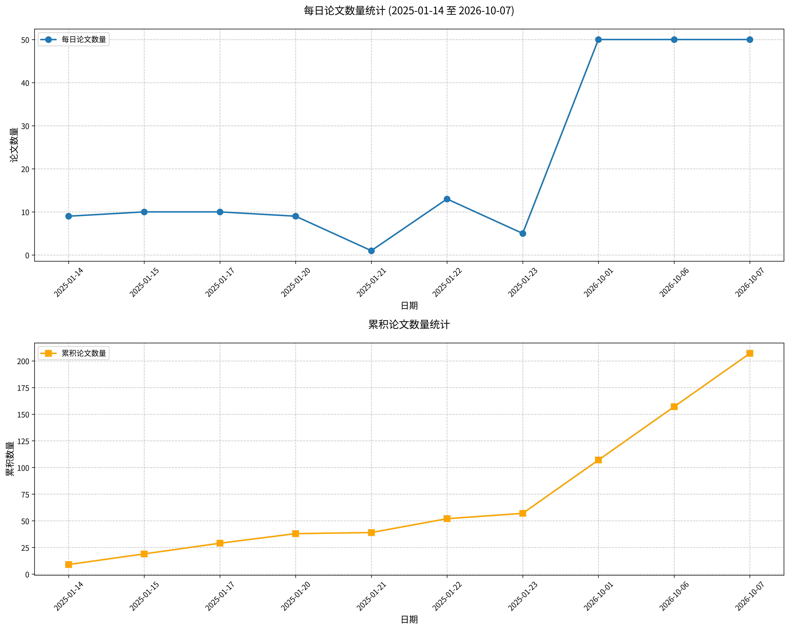

原文标题： Rethinking Cross-Tokenizer On-Policy Distillation: From Alignment Coverage to Supervision Reliability
摘要： 同策略蒸馏（OPD）利用教师反馈，在学生模型自身生成的文本上训练学生模型。当教师模型与学生模型使用不同分词器时，比较二者的预测需要在序列层面和词表层面进行对齐。本文考察扩大这种对齐覆盖范围是否能改善学习。在数学推理和代码生成任务上的三组异构教师—学生模型对中，尽管词表存在显著不匹配，严格 1:1 对齐组已经覆盖了大多数学生生成的词元。对于蒸馏前从学生模型采样的响应，共享词表在严格对齐位置上平均保留了几乎所有教师模型和学生模型的概率质量。将反向 KL 散度限制在每个严格位置处由学生模型选择的共享词表前 16 子集上，可达到与全共享词表 OPD 相当的准确率，并优于所评估的跨分词器基线。在不匹配组中对跨度对数概率添加均方误差监督可带来完整的监督覆盖，却会降低准确率。在仅使用严格损失训练的检查点上，跨度梯度与严格梯度的方向一致性较弱或为负，且其幅度相对于严格梯度有所增大。这些诊断可能有助于解释加入跨度监督后出现的准确率下降。我们的发现促使研究重心从最大化对齐覆盖转向优先考虑监督可靠性：在严格位置上的紧凑监督，可能比引入弱对齐或冲突训练信号的更广覆盖更有效。
论文链接： HuggingFace | arXiv
原文标题： DuoMatching: Joint-Marginal Distribution Matching for Few-Step Video Generation
摘要： 流式视频生成得益于分布匹配蒸馏（DMD），该方法将视频帧的联合分布与视频教师模型对真实视频分布的近似进行匹配。尽管这种联合匹配缓解了自回归展开过程中的漂移问题，但在视觉质量和语义对齐方面仍存在局限。为解决这些局限，我们提出了DuoMatching，一种通过统一的联合-边缘形式来近似真实视频分布的分布匹配框架。在现有联合匹配公式的基础上，额外的边缘匹配目标从图像生成器中提供了专用的帧级监督，从而迁移其互补的视觉和语义先验。为了在视频生成中应用这种帧级监督，我们引入了LatentBridge以解决视频学生模型与图像教师模型之间的潜在表示不匹配问题。潜在变异采样进一步将这种帧级监督分布到不同的时间片段上，从而减少冗余。实验表明，DuoMatching在 largely 保持运动动态的同时，提升了视觉质量、构图和语义对齐。人类评估显示，相较于所有评估基线，总体偏好率超过80%。项目页面见 https://johnzhan2023.github.io/DuoMatching/。
论文链接： HuggingFace | arXiv
原文标题： TRACE: Rollout-Guided Quantization-Aware Training for FP4 Reinforcement Learning of MoE Language Models
摘要： 用于大型语言模型（LLM）后训练的强化学习（RL）在 rollout 生成过程中会带来大量计算与内存开销，这促使人们采用低精度 rollout 以实现高效的 RL 训练。然而，现有 FP4 RL 方法存在一个关键局限：它们主要分别优化训练路径与 rollout 路径上的量化精度，而非直接减小两条量化执行路径之间的差异。在本工作中，我们提出 TRACE（Train-Rollout Quantization Alignment via Compact GuidancE，通过紧凑引导实现训练-Rollout 量化对齐），一种用于混合专家（MoE）语言模型 RL 训练的 FP4 量化框架，旨在解决现有 FP4 RL 方法的上述局限。TRACE 融合了 rollout 引导的量化感知训练，利用 rollout 侧的量化结果指导训练侧的 FP4 舍入决策，从而直接减小训练-Rollout 差异。此外，TRACE 采用高效的量化信息缓存方案，选择性保留来自更深层的尾数和缩放因子信息，以降低 rollout 引导引入的存储与通信开销。我们在四个大规模 MoE 语言模型上，在推理、编码和长时程 RL 任务中评估了 TRACE。我们的结果表明，TRACE 能够实现 FP4 权重/激活与 FP4 KV 缓存的联合 rollout，其 RL 性能与 BF16 rollout 相当；同时，相较于对 BF16 训练所得策略进行事后 FP4 量化，实现了最高 5.4 倍的 rollout 加速和强劲的最终 FP4 性能。
论文链接： HuggingFace | arXiv
原文标题： EVISKILL: Grounding Skill Evolution in Replayable Evidence
摘要： 持续技能演化使大语言模型智能体能够从交互经验中积累并精炼可复用的程序性知识，而无需更新模型参数。其有效性不仅取决于确定需要改变什么，还取决于判断某项改变为何合理以及何时应成为持久性指导。然而，现有的经验驱动方法可能丢失支持编辑的行为证据和任务上下文。此外，全局验证结果对其构成性改变的判断并不完整：局部得到支持的修正可能随被拒绝的修订一并被丢弃，而某些证据可能需要进一步的经验才能形成有用的更新。为此，我们提出了EVISKILL，这是一个证据驱动的框架，它将执行观察组织为可重放证据卡，并在合成编辑时显式关联其支持性上下文。定向重放通过重新执行来验证这些编辑，并提供用于修正的反馈。在多个轮次中，EVISKILL保留证据并暂时保留得到支持的编辑以进一步精炼，同时通过全局验证决定其是否纳入最终技能。在六个大语言模型骨干上跨三个交互式基准的实验证明了该方法的有效性。
论文链接： HuggingFace | arXiv
原文标题： From Evidence to Action: How Tool-Using Agents Fail
摘要： 工具使用型智能体会对外部状态造成具有实际后果的改变，但正确的结果并不保证其行动得到了事先确立的证据支持。我们研究当智能体从决定是否行动转向执行单一动作和依赖型工作流时，证据—行动链在何处断裂。在十种模型—运行框架配置中，较强的静态动作评估可以与弱得多的交互式执行并存。失败往往始于执行之前：智能体在调查不完整时便停止，或在所需证据确立之前就采取行动。一旦获得所需证据，单动作执行通常可靠；而多动作工作流还会额外暴露未解决的先决条件和执行不完整的问题。为开展这一分析，我们提出 SafeActBench，其包含跨六个操作领域和五类协议的 656 个案例，这些协议从静态动作判断和经调查的不行动，逐步推进至单动作与多动作工作流。一个溯源绑定的证据账本（Evidence Ledger）和确定性轨迹评估器追踪哪些信息已被确立、动作何时发生，以及下游依赖是否得到满足。这些结果表明，失败不仅源于信息缺失，还源于智能体在决定和执行动作时如何使用已确立的证据。
论文链接： HuggingFace | arXiv
原文标题： Taming VLAs under Robot Execution Errors: Self-Compensation and Stress Testing
摘要： 当机器人的实际执行动作偏离视觉-语言-动作（VLA）策略所指令的动作时，VLA策略往往会失效。此类执行误差源于机器人的机械结构和工作条件，例如磨损和有效载荷变化。我们提出自补偿VLA，一种部署时自适应方法，使VLA策略在生成指令时能够预先补偿机器人的执行误差。该方法无需任务奖励或标签，利用VLA所指令的动作与机器人实际执行的运动之间的残差在线更新策略。为在仅靠物理机器人难以覆盖的执行条件下对VLA鲁棒性进行压力测试，我们提出RoboStress，一个可控仿真基准。它将已有的关节级摩擦、间隙、柔顺性和重力补偿误差模型组合为七种部署场景，其执行误差取决于机器人的状态和运动历史。在RoboStress上，自补偿VLA取得的平均任务成功率高于基础策略以及在训练中构建鲁棒性的方法。在两台具有不同使用历史的物理机械臂上，该方法在每台机械臂上将平均任务成功率提升超过30个百分点，且增益可扩展至任务演示中未见过的物体。
论文链接： HuggingFace | arXiv
原文标题： AutoSciBench: Autonomous Benchmark Generation for Evaluating Scientific Agents
摘要： 随着智能体快速发展，现有基准可能趋于饱和，从而限制其区分不同能力并揭示剩余失效模式的能力。尤其在科学领域，构建和更新基准需要大量时间、人力和领域专业知识，使得评估难以与智能体能力的进步保持同步。为应对这一挑战，我们探究科学智能体基准能否在智能体能力演进过程中被自动生成并迭代适配。我们提出 AutoSciBench，该框架将每个任务表示为高层概念与低层配方：高层概念指定科学领域、数据模态和所需推理方法，低层配方规定问题、环境和真值答案如何构建与验证。智能体尝试解决每个任务，产生求解轨迹及相应的评判反馈，AutoSciBench 利用这些反馈修订配方或概念，封堵已观察到的捷径，并将任务转向原始数据重新审视、中间结果解读和证据整合。从已完成的细化轨迹中提炼的经验进一步指导新概念生成，使早期任务细化中的经验能够为后续基准构建提供信息。我们从现有基准出发，在计算生物学、材料科学和临床影像学领域评估 AutoSciBench。在计算生物学和材料科学中，生成的基准使平均求解器准确率相较于人工整理的基准分别下降 22.4 和 25.5 个百分点；同时，生成任务在所有三个领域均获得更高的平均质量评分，表明科学智能体评估能够随智能体能力的进步而适配。
论文链接： HuggingFace | arXiv
原文标题： HuatuoGPT-3: RL-Only Domain Adaptation from Base Models
摘要： 领域自适应旨在将通用大型语言模型（LLM）转变为目标领域的专家。尽管主流的SFT+RL流程提供了便捷的冷启动，但它可能降低探索多样性，并通过多阶段优化引入额外复杂性。这些局限促使了仅强化学习的领域自适应。然而，纯同策略强化学习（on-policy RL）存在冷启动问题，而混合策略强化学习（mixed-policy RL）仍有所不足：教师输出中的信息性词元在训练早期学习过慢，且过时的教师输出会阻碍后期改进。我们将这两种失败模式分别识别为梯度饥饿（Gradient Starvation）和教师分布锚定（Teacher-Distribution Anchoring）。为解决这些问题，我们提出单阶段策略优化（One-stage Policy Optimization, OnePO），其将教师输出视为策略改进的暂态引导。OnePO 结合了自适应目标演化（Adaptive Objective Evolution）以强化对信息丰富但低概率的教师词元的学习，并采用教师退役（Teacher Retirement）机制，在当前策略能够超越教师输出后即将其丢弃。在医学领域自适应中，OnePO 仅使用 2 万个训练样本即在 HealthBench（总分）上达到 67.2，分别超过 SFT+RL 和纯 RL 2.7 分和 7.4 分。我们进一步扩展 OnePO 以构建 HuatuoGPT-3，这是一个开源医学 LLM 系列，其 27B 变体在 HealthBench（总分）上达到 70.1，在 HealthBench Professional 上达到 71.4，超越了 GPT-6 Astra 等前沿模型。模型和代码见 https://github.com/FreedomIntelligence/HuatuoGPT-3。
论文链接： HuggingFace | arXiv
原文标题： World Action Learning via Interaction-Centric Spectral Latent Guidance
摘要： 学习通用机器人策略需要大规模真实世界交互数据，然而收集机器人演示仍然昂贵且难以扩展。第一人称视频为机器人操作提供了丰富的、具有任务相关语义的人类交互经验，但直接迁移具有挑战性，原因有二：从帧重建中推断的潜在动作可能被诸如第一人称相机运动之类的干扰性变化所主导，并且人类与机器人行为往往表现出不同的时序动态。我们提出了 WING（World Action Learning via INteraction-Centric Spectral Latent Guidance），一个将交互知识从第一人称视频迁移到机器人策略的框架。WING 首先将观察者引起的运动与手-物体交互分离，并将以交互为中心的成分蒸馏为潜在动作。随后，它利用跨具身任务语义集中于缓慢变化时序结构这一观察，在谱域中识别第一人称潜在动作与机器人行为之间共享的低频分量，并用其指导动作生成。WING 在 LIBERO 上达到 99.20% 的平均成功率，在 RoboTwin 2.0 上达到 93.80%，在 RoboCasa-GR1 上达到 57.7%，并且在多种泛化设置下的四个真实世界操作任务中也表现强劲。这些结果表明，以交互为中心的谱引导提供了一种有效且可扩展的方式，将物理交互知识从人类第一人称视频迁移到机器人控制。项目主页：https://mikuz12.github.io/wing/
论文链接： HuggingFace | arXiv
原文标题： Selection-Based Structured Reasoning: Toward Efficient Multimodal Search Agents
摘要： 多模态智能体通常在执行每个动作之前生成自由形式的推理。对于小规模模型，有限的模型容量可能导致冗长的推理，这类推理难以为动作生成提供有用指导，同时带来可观的推理成本。为应对这一挑战，我们提出了基于选择的结构化推理（Selection-based Structured Reasoning, SSR），这是一个将推理重构为选择而非开放式生成的框架。SSR 将反复出现的高层推理表示为预先指定、可复用的自然语言候选。在每一轮中，模型根据当前上下文下这些推理候选的似然从中进行选择，而无需辅助任务头。使用预先指定的推理轨迹可实现并行评分，其中教师强制预填充利用共享的上下文 KV 缓存，在候选内部及候选之间并发计算 token 似然。我们在七个多模态搜索基准上使用 2B 和 4B 模型评估 SSR。在多种强化学习目标和监督微调下，SSR 在不牺牲任务性能的情况下带来显著效率提升。SSR 的平均成功率可与同规模领先搜索智能体相竞争，同时将每轮推理延迟降低 90% 以上，并将每个问题的模型总推理延迟降低 28-54%。项目页面：https://zfy0314.github.io/ssr-webpage/。
论文链接： HuggingFace | arXiv
原文标题： UNREAL: Unifying Retrieval and Long-Context with a Single Model
摘要： 长上下文推理与检索增强生成（RAG）在差异极大的尺度上处理证据选择，从单个长提示到整个语料库。我们探究单一模型内部机制能否在这一范围内选择证据。我们提出 UNREAL（UNifying REtrieval And Long-Context with a Single Model），一种模型原生的证据选择框架，以贯通语料库检索与长上下文推理。UNREAL 对文本块进行编码，并直接从冻结 LLM 的内部表示中导出检索查询。它新增不到 50 万个可训练参数，并保持骨干模型不变。在包含 30 亿 token、2100 万个文本块的维基百科索引上，四种稠密与混合 UNREAL 骨干模型均优于最先进的检索器-重排器系统。最佳模型将 HotpotQA 上的召回率从 49.1% 提升至 73.2%，将 2WikiMultiHopQA 从 31.7% 提升至 60.1%，将 MuSiQue 从 8.8% 提升至 14.4%。应用于长上下文任务时，同一选择机制在生成前移除干扰项，将其 128K token 最大上下文长度下的 NoLiMa 准确率从 1.0% 提升至 24.83%，并将 256K 下 LV-Eval 的 F1 分数从 49.97% 提升至 54.66%。相对于全上下文推理，UNREAL 还从约 32K token 起降低 FLOPs 和首 token 时间，且随上下文增长收益更大。这些结果共同表明，模型内部证据选择可作为语料库检索与证据稀疏长上下文推理的共同基础。
论文链接： HuggingFace | arXiv
原文标题： MiniCorp: The Last Mile of the AI Agent Firm
摘要： 迈向企业级AGI的最后一公里，是让公司实现自主运营。训练和适配此类代理需要纵向企业数据，而这类数据仍然稀缺、获取成本高昂，且常受隐私限制。历史档案也往往不完整，且仅记录实际发生的事件，无法展示替代决策的结果。我们提出MiniCorp——一个办公模拟器，用于研究代理如何集体运营公司，同时大规模生成企业数据。以一家电商公司作为演示，MiniCorp连接了两个相互作用的世界。外部世界对客户、动态竞争者和市场机制进行建模。内部世界由代理组成，它们观察事件、讨论可选方案并做出战略决策。这些决策对市场产生持久影响，由此产生的反馈又为公司的后续决策提供信息。随着公司与市场不断互动，MiniCorp持续记录代理的通信和决策。这些记录保留了当时可用的信息以及随后的业务结果。检查点机制允许在相同情境下以不同决策进行重放，从而提供静态档案无法实现的对比。我们针对真实市场的实证研究报告中的模式，评估了端到端保真度。这些评估为代理提供了逼真的市场反馈，并降低了它们学会利用模拟器缺陷的风险。我们的实验表明，代理能够跨角色协调，并根据市场反馈调整其决策。在明确的长期战略指导下，即使早期回报不佳，它们也能持续进行广告探索。因此，MiniCorp既为研究AI运营的公司提供了环境，也为代理训练和评估提供了可扩展的纵向与反事实企业数据来源。
论文链接： HuggingFace | arXiv
原文标题： AGO AI Quality Gate: Evidence-First Release Decisions for Retrieval-Augmented Generation
摘要： 采用检索增强生成（RAG）的企业面临一个反复出现的运营决策：推进、修订还是阻止某个系统版本。证据是不完整的，指标来自可能出错的LLM评判器。我们报告了AGO AI质量门禁（AGO），一个在工业RAG评估实践中部署的证据优先质量门禁框架。AGO整合了四个关键组件：一个将缺失数据和评判器错误视为显式结果的四态决策模型；结合确定性检查、本地护栏和结构化LLM评估的分层评分；一个以概率方式量化回归风险的分层Beta-二项门禁；以及一个强制性的元评估协议，用于在LLM评判器影响决策之前对其进行验证。由于实践数据为专有数据，我们在RAGBench上评估评判器层，这是一个包含12个数据集、10万条标注RAG轨迹的公共基准。在相同的分层测试样本上（每个评判器N=1200），低成本评判器（gpt-4.1-nano）检测非遵循性答案的表现仅略高于随机水平（AUROC 0.603 [0.570, 0.634]），尽管其协议输出完美无误，而gpt-4o达到0.783 [0.756, 0.807]——但其各领域性能仍在0.62至0.88之间。一项涵盖回归、无变化和改进的固定种子门禁研究量化了不安全推进、误报成本和改进吞吐量。在回归情况下，决策级配置将不安全推进降至22.2%-35.1%，而朴素门禁为29.3%-41.8%。这些结果支持以下设计选择：评判器质量必须按实践逐一衡量，且仅凭点估计不足以做出发布决策。
论文链接： HuggingFace | arXiv
原文标题： GUI-HARVEST: Self-Improving GUI Agents through Evidence-Driven Harness Evolution
摘要： 围绕 GUI 模型的可执行框架决定了观测如何被组装、动作如何被执行，以及验证、恢复和终止如何被控制。与非 GUI 智能体的执行框架优化相比，自动优化该执行框架面临三个相互耦合的挑战：协调模型意图与观测到的视觉效果，在可变执行结果下诊断失败，以及识别跨任务的重复失败模式并将其转化为可复用的运行时更改。我们提出 GUI-HARVEST，一种自动执行框架优化器，可在骨干模型冻结的情况下实现自改进的 GUI 智能体。首先，为将诊断建立在观测到的动作效果之上，它把模型输出和执行动作与前后截图对齐，将发现关联到具体界面转换。其次，为应对执行变异性，它将同一任务的重复运行视为联合证据单元，利用任务内比较定位与结果相关的行为差异。第三，它将跨任务验证过的发现整合为反复出现的失败模式，将其映射为有界源代码编辑，并在评估前记录预测，再通过重复执行将预测的行为效果与任务性能一并检验。在 OSWorld-Verified 上的实验表明，在六个通用开源、GUI 专用开源和专有骨干模型上均取得一致的留出集提升；Qwen3-VL-32B-Instruct 在完整套件上提升 12.33 分。冻结执行框架迁移使 GPT-5 在 WindowsAgentArena 上以 50 步、无需进一步优化的情况下提升 13.87 个百分点。在相同骨干模型和初始执行框架下，GUI-HARVEST 优于 Self-Harness 和 Meta-Harness，表明面向 GUI 的诊断与验证有助于执行框架改进泛化到未见任务。代码可在 https://github.com/GaryYang12345/GUI-HARVEST 获取。
论文链接： HuggingFace | arXiv
原文标题： EmbodiedSmith: Scaling Embodied Data through Recursive Self-Improvement Flywheel in Simulation
摘要： 扩展机器人基础模型需要多样化的训练数据和可靠的评估环境。仿真提供了一种可扩展的解决方案，然而现有的生成流程仍受限于预定义的资产和技能、场景生成与任务生成之间的脱节，以及对复杂具身形态和物理的支持有限。我们提出了EmbodiedSmith，一个通过递归自改进（RSI）实现可扩展具身数据生成的框架。EmbodiedSmith将资产、场景和任务生成统一在一个支持自主创建和语言驱动定制的流程中。其核心是一个智能体式精炼循环：场景生成预判下游任务需求，而任务生成引导有针对性的场景编辑，使场景和任务能够相互迭代改进。这种联合精炼提升了任务生成的成功率，包括长时程任务。该框架进一步支持移动机械臂、人形机器人和灵巧手，以及涉及可变形物体和流体的交互，拓宽了生成数据中所表征的行为和物理现象的范围。这些能力共同为机器人预训练和评估提供了一个灵活的仿真引擎。大量实验验证了所生成数据的质量、多样性和生成效率，而下游策略实验表明，数据多样性的增加改善了泛化能力。
论文链接： HuggingFace | arXiv
原文标题： Making LLMs Say What They Think: Measuring and Improving CoT-Interpretability Alignment
摘要： 思维链（CoT）轨迹常被用作大语言模型（LLM）得出答案过程的代理。然而，越来越多的证据表明，模型的思维链往往无法反映其内部计算过程，并且可以在不影响最终答案的情况下被改变。在本研究中，我们衡量并提升了LLM的思维链所描述的推理过程与其内部实际计算之间的一致性。我们提出了思维链-可解释性对齐（CIA），这是一种衡量模型思维链轨迹与可解释性工具所检测到的内部推理策略之间一致程度的指标。我们在三项任务（两跳问答、提示干预和整数乘法）上对三个LLM评估了CIA，发现LLM在所有任务上均表现出有限的一致性（44.8%-75.9%）。随后，我们通过后训练实验改进CIA，将任务准确率和参数化忠实性信号同时作为奖励。实验表明，我们能够在保持或提升任务准确率的同时，大幅提升思维链的参数化忠实性。我们提供了丰富的分析，例如其泛化模式。我们的工作既为审计思维链参数化忠实性提供了框架，也为使模型的显式推理更加可信提供了路径。代码和数据可在https://github.com/yihuaihong/CIA-minimal-repro获取。
论文链接： HuggingFace | arXiv
原文标题： Adaptive Latent Capacity for World Models
摘要： 我们提出了自适应LeWorldModel（ALeWM），一种基于联合嵌入预测架构（JEPA）的世界模型，它能够学习将预测信息集中于宽潜在表示的紧凑前缀中。为促进这种排序，ALeWM学习一个以序列为条件的前缀长度分布，并训练预测器从采样的输入前缀估计完整的下一嵌入。由于标准的反坍缩目标鼓励潜在坐标之间的变化，而不按预测重要性对其进行组织，我们还引入了MixSIGReg。MixSIGReg将掩码嵌入针对一个先验加权的混合分布进行正则化，该混合分布在前缀坐标上具有高斯活跃分布，在其余坐标上为零。因此，ALeWM的目标鼓励早期坐标保留对预测和递归规划有用的信息。我们的分析表明，MixSIGReg所使用的混合分布为较早的坐标块分配较高的方差，为较晚的坐标块分配较低的方差。此外，我们证明在特定假设下，通过将最有助于预测的信息放置在较早的块中，预测误差可被最小化。在实验方面，我们在具有已知状态变量的受控动力系统以及目标条件视觉控制中研究了ALeWM的行为。我们表明，ALeWM始终比调优的固定宽度LeWM获得更高的平均成功率，同时平均规划容量更低。
论文链接： HuggingFace | arXiv
原文标题： NeMo-DCR: Bit-Exact Delta-Compressed Refit for Scalable Agentic RL at Trillion-Parameter Scale
摘要： 智能体强化学习（RL）将训练与 rollout 解耦，因此每次策略更新都必须在下一次批次之前到达 rollout 集群。跨两个 AWS 区域传输完整的 1T 检查点以进行此类权重同步（refit）需要 87.5 分钟。对 BF16 训练的测量表明，每步约有 1% 的权重会改变其存储值。近期系统利用了这种稀疏性，但在放置、精确性或效率方面仍有不足：它们重新实现放置规则、组装完整张量、以算术方式重建数值，或使用跨集群集合通信，且均无法完全从重配中途失败中恢复。我们提出 NeMo-DCR（Delta-Compressed Refit，增量压缩重配），它仅发送变化，却保持位精确：接收方获得与稠密重配相同的参数和缓冲区比特。在放置方面，固定仿射映射将变化从训练分片投影到检查点的规范坐标中，残差转换覆盖其余变化，服务运行时的原生加载器将所有变化放入接收方存储。在精确性方面，可压缩 XOR 掩码承载那些投影和加载器能够保留存储位的仿射变化，覆写则承载其他变化。接收方就地应用二者，重试会覆写部分写入，联合提交将策略绑定至基线，作为下一增量的基础。在效率方面，对象存储或中继树在增量构建期间流式传输有效载荷，无需跨集群集合通信。即使在 3% 和 5% 的变化率下，NeMo-DCR 对 30B–1T 模型的重配也比仅传输完整检查点的参考方案快 12–40 倍。在 3% 变化率下，1T 中继树重配耗时 150 秒，而非 87.5 分钟，使重配对万亿参数规模的跨集群智能体强化学习变得实用。
论文链接： HuggingFace | arXiv
原文标题： DiffGate: Difficulty-Gated Teacher Guidance for On-Policy Distillation
摘要： 同策略蒸馏（OPD）已成为大语言模型后训练中广泛使用的范式，它通过在学生模型自身生成的轨迹上对学生进行监督，减少了传统蒸馏的训练—测试不匹配。然而，现有 OPD 目标在很大程度上仍是词元局部且与结果无关的，即在每个前缀上优化教师—学生一致性，而推理质量却是在轨迹层面决定的。带可验证奖励的强化学习（RLVR），尤其是组相对策略优化（GRPO），提供了互补的结果级监督，但存在奖励稀疏和信用分配粗粒度的问题。我们表明，OPD 与 RLVR 具有互补的盲点：教师信号提供密集的局部指导，但与 rollout 正确性对齐较弱；而组相对奖励能够捕捉任务成功，却提供粗粒度的词元级信用，并在全失败组上消失。我们提出 DiffGate，一种将 GRPO 与选择性、有界教师指导相结合的结果门控目标。教师监督仅施加于失败轨迹，按组难度缩放，并进行平滑有界处理，以防止极端的教师—学生差异主导优化。因此，验证器决定哪些轨迹接受教师指导，而教师则在这些轨迹内提供密集的词元级更新方向。在 Qwen3-0.6B 和 Qwen3-1.7B 学生模型上，与匹配的 GRPO 相比，DiffGate 将代码 avg@8 分别提升 +1.7 和 +1.8 分，并将 pass@8 分别提升 +1.6 和 +5.7 分。在数学任务上，avg@8 与 GRPO 的差距保持在 0.5 分以内，而 pass@8 分别提升 +1.1 和 +3.9 分。总体而言，DiffGate 在全部四种模型—领域设置中均提升了 pass@8，表明在我们的评估协议下解覆盖率得到了提升。
论文链接： HuggingFace | arXiv
原文标题： SlimWise: Decoupling Expert Pruning Across Prefill and Decode for Efficient MoE Serving
摘要： 混合专家（MoE）模型每个 token 仅激活少量专家，但批量解码可能访问几乎整个专家池，导致专家权重流量成为主要瓶颈。专家剪枝可减少该流量，但传统方法也会对计算受限的预填充阶段进行剪枝，从而以牺牲模型质量为代价，却仅带来很小的吞吐量收益。我们提出 SlimWise，一种针对每个推理阶段定制专家池的服务框架。SlimWise 使用完整模型执行预填充，并使用剪枝模型执行解码；该剪枝模型无需转换即可直接复用预填充生成的 KV 缓存。在两个 MoE 主干网络和三种剪枝准则下，这种无需训练的 KV 缓存交接在许多设置中显著缩小了与完整模型之间的精度差距。我们还表明，基准准确率可能掩盖剪枝引起的大幅生成长度变化。为解决这些失真和残余精度损失，SlimWise 引入一个低成本蒸馏阶段，训练解码器从完整模型的 KV 缓存继续生成，同时仅更新一小部分参数。SlimWise 在 vLLM 中实现，支持预填充-解码（PD）分离和 PD 共置服务。在 Qwen3.6-35B-A3B 上，SlimWise 在 50% 专家剪枝率下将解码吞吐量最高提升 1.81 倍，且精度损失极小。
论文链接： HuggingFace | arXiv
原文标题： DiVeR: Decision-Critical Verifier Learning for VLA Test-Time Scaling
摘要： 扩展机器人数据和模型容量已改进视觉-语言-动作（VLA）策略，但进一步进展受机器人数据高成本的制约。验证器引导的测试时扩展通过采样多个动作候选，并在推理时选择最有可能导向任务成功的一个，提供了一种高效替代方案。现有的基于分类的验证器从轨迹级结果中学习，却将所有访问过的状态同等对待，尽管它们对候选区分的价值可能在一条轨迹中有所不同。在许多状态下，合理动作彼此相似，提供的区分信号有限；而只有稀疏的决策关键状态才允许存在实质性不同的动作，这些动作能够显著影响下游结果。为解决这一问题，我们提出DiVeR，它通过采样动作表示的离散度来估计决策关键性。DiVeR随后利用该信号重新加权验证器学习，使其偏向动作选择最关键的状态，且无需步骤级标注或额外环境交互。在LIBERO、RoboCasa以及Franka Research 3机器人上的真实世界实验中，DiVeR通过更有效的验证器引导动作选择持续提高任务成功率，同时增加的验证器推理开销可忽略不计。
论文链接： HuggingFace | arXiv
原文标题： Understanding and Enhancing Backdoor Persistency in LLM Agent Post-Training
摘要： 开发者可以通过良性后训练适配第三方模型来构建 LLM 智能体。我们研究一种供应链威胁：攻击者提供一个带有后门的模型，该后门是一种隐藏行为，会在特定输入模式出现时产生恶意输出。我们聚焦于软件工程智能体，考察此类后门能否在开发者的监督微调（SFT）以及后续任务级强化学习（RL）后仍然存活。我们观察到，良性 SFT 会显著降低攻击成功率，但后续 RL 往往保留残余行为，有时甚至提高攻击成功率。我们对 SFT 期间后门侵蚀的分析识别出两个可能有利于后门存活的因素：初始后门强度以及与良性训练的梯度兼容性。这些因素促成了 PersistBD，其在发布前对已植入后门的模型进行优化，以提升其在良性后训练过程中的持久性。在 Qwen2.5-Coder-7B 上，PersistBD 将 SFT 后的攻击成功率从 20% 提升至 74%，将 SFT-RL 后的攻击成功率从 20% 提升至 76%，同时保持相当的良性任务性能。总之，我们的结果表明，后门能够在良性后训练过程中保持活跃，且攻击者可以有意提高其后门持久性。这凸显了 AI 开发者面临的供应链风险，并促使人们开发更强的技术，以在将第三方模型适配为智能体时检测和缓解继承的后门。我们的代码见：https://github.com/uiuc-kang-lab/PersistBD。
论文链接： HuggingFace | arXiv
原文标题： Hiding Tool Latency in On-Device Cascaded Voice Agent through Speculative Execution
摘要： 工具增强型语音助手通常会将自动语音识别、大语言模型推理和外部工具执行串行化。因此，只有在用户结束说话且 LLM 已识别出所需工具调用之后，才会产生工具延迟。我们提出一种面向端侧级联语音智能体的推测式工具执行方法，它从不完整的 ASR 假设中预测工具请求，并在语音仍被接收时启动工具执行，从而降低端到端响应延迟。我们的方法引入一个预测器模块，在语音识别期间预测工具调用，对这些调用进行推测性执行并缓存结果。随后，将缓存输出注入 LLM 提示，从而实现更快的响应。此外，为缓解用户在说话过程中自我纠正所导致的错误，我们采用基于规则的验证机制，仅选择性地注入有效的缓存结果。作为最终保障，LLM 保留直接发起工具调用的能力，确保在最坏情况下我们框架的延迟以基线串行执行流水线为上界。我们使用完整实现的 Android 语音助手的实时测量结果评估我们的方法。我们的方法将首音频时间中位数从 5.79 秒降低至 4.60 秒，并将标准差从 3.49 秒降低至 2.81 秒，从而实现更可预测的响应延迟。
论文链接： HuggingFace | arXiv
原文标题： Accent Analogy Guidance: More Speaker Similarity at Equal Accent in Cross-Lingual Voice Cloning
摘要： 在跨语言零样本文本到语音中，参考语音的口音会泄漏到目标语音中。我们提出口音类比引导（AAG），一种无需训练的采样项，它减去一个口音方向；该方向由模型自身对同一合成语音在两种语言下渲染的预测估计得到，从而使说话人语音被抵消，仅保留口音。在真实配音数据上，通过盲评 LLM 口音评判器，对参考和文本之间的无分类器引导进行重加权及其变体，均保持在同一条身份-口音权衡曲线附近；我们根据同等口音下高于该曲线的说话人相似度（ΔSIM）来评价方法。在四个开源 TTS 模型上，AAG 均位于曲线之上：在 OmniVoice 上，三个测试集上的 ΔSIM 为 +0.11 到 +0.27（在说话人相似度为 0.29 时，1-5 分制上的口音为 3.51 到 4.28，而重加权仅保持 0.02）；MaskGCT 和 CosyVoice 2 也位于各自曲线之上，在 F5-TTS 上，它比任何重加权设置都更地道。一种不依赖 LLM 的语言识别度量与一个十二人听测小组的结果一致。一个前提测试和模型自身曲线的范围可提前表明 AAG 是否能够获益以及大致获益多少，并预测出唯一一个它没有获益的模型（X-Voice）。
论文链接： HuggingFace | arXiv
原文标题： Learning to Read the Contextual Tokens in Diffusion Transformers
摘要： 多模态扩散Transformer（MM-DiT）在生成过程中联合处理视觉与文本表征。这类模型通过多模态注意力机制反复更新文本标记，形成动态上下文标记，而其特征功能尚未被充分理解。在本研究中，我们提出了一个通过自然语言询问来解读这一上下文空间的框架。我们训练了一个轻量级瓶颈网络，将中间上下文标记映射到一个冻结的大语言模型（LLM）的输入空间，使LLM能够直接根据这些隐藏表征回答关于正在生成的图像的问题。我们的解读器揭示了上下文标记编码了正在生成的场景的丰富全局表征：生成特定的语义信息，包括提示中未充分指定的属性，在去噪过程的极早期即可被获取，而越来越精细的细节则随时间推移变得可读。值得注意的是，即使MM-DiT接收空提示，这些信息仍然可以被解码，这表明上下文标记从不断演化的视觉表征本身积累了大量的图像特定信息。我们进一步发现，具有更高可读性上下文表征的生成结果往往获得更高的人类偏好评分。基于这些观察，我们提出了上下文对齐（Contextual Alignment），一种明确强化上下文标记中所编码视觉-语义信息的训练技术，能够提升生成质量和分布覆盖度。综上所述，我们的结果确立了上下文标记既是理解MM-DiT内部动态的可解释视角，也是改进生成模型的有效目标。
论文链接： HuggingFace | arXiv
原文标题： Harness-Aware Distillation for Small Language Model Agents
摘要： 语言模型智能体在部署时通常带有运行框架（harness），即围绕模型、负责管理其上下文、工具与反馈的软件。当将此类智能体蒸馏为更小的智能体时，运行框架保持不变，因此学生模型主要需要教师模型特有、运行框架无法提供的能力，例如根据运行框架信息正确行动。然而，标准蒸馏会模仿教师模型的完整输出，并将运行框架视为输入的一部分。我们提出运行框架感知蒸馏（Harness-Aware Distillation, HAD），将蒸馏重点放在教师模型超出运行框架之外所额外提供的能力上。HAD 通过两个组件补充在线策略蒸馏：一个动作偏好，用于对比同一教师模型在有/无运行框架信息时的动作，并在学生模型自身推理之后进行评分；以及一个有效性检查，用于剔除所偏好动作与运行框架记录相矛盾的偏好对。我们表明，这种对比为学生模型提供了仅靠模仿教师模型无法提供的信息，并且 HAD 不需要任务奖励、成功标签或未来信息。在多个长时程智能体基准和模型上，HAD 在相同固定运行框架下优于在线策略蒸馏基线。我们的分析表明，与基线相比，HAD 进入无效循环的次数更少，从错误中恢复的次数更多，并表明它能够自适应地将可学习的反馈保留在其权重中，同时从运行框架读取状态信息。
论文链接： HuggingFace | arXiv
原文标题： AdvSim2Real : Training Web Agents Against Adaptive Prompt Injection in a Web World Model
摘要： Web智能体通过读取第三方编写的页面并据此执行操作来完成用户请求，因此页面上植入的指令可能使智能体偏离用户目标。智能体无法简单地忽略页面，因为页面同时承载着任务所需的值和控制信息。当前的防御方法是在训练前固定注入样本上对智能体进行微调，而能够适应已训练模型的自适应攻击者可以绕过这些防御。对抗训练虽允许攻击者自适应，但任务保持固定，因此一旦智能体解决了某个任务，该任务便不再具有教学价值。我们提出AdvSim2Real，在冻结的Web世界模型内协同演化任务课程、注入对抗者和智能体。课程奖励那些智能体大约一半时间能解决的任务，而对抗者仅奖励成功翻转，即使经评判为成功的任务转为失败的注入。在模拟器中训练使一个4B智能体同时提升了能力和鲁棒性：无论有无攻击，其完成率均有所提升，能够抵御从未训练过的前沿模型对抗者，且其能力增益可迁移至真实浏览器。在150个Web任务上，AdvSim2Real在该未见对抗者下将完成率相对于基础智能体提升了33.6%。
论文链接： HuggingFace | arXiv
原文标题： DistScene: Object-to-Scene Distillation for 3D Scene Generation
摘要： 我们提出了DistScene，一个通过联合建模环境和单个物体来实现单图像组合式3D场景生成的框架。与现有主要将场景表示为物体集合的方法不同，我们将环境建模为显式的场景组件，从而为物体放置提供几何上下文。具体而言，我们引入了场景框架生成，在共享坐标帧中联合生成独立的环境和物体组件，使它们的几何形状和相对放置能够一起学习。然后，我们引入了以物体为中心的细化，在局部帧中结合场景上下文对每个物体进行细化。最后，我们开发了物体到场景蒸馏，通过自动合成并渲染的合成场景，将预训练的物体生成先验迁移到场景生成中。在室内和室外基准上的评估表明，相较于所评估的基线，我们的方法在场景级空间一致性方面有所提升。项目主页：https://coolbeam.github.io/DistScene/
论文链接： HuggingFace | arXiv
原文标题： HLA: Expressive Hybrid Linear Attention via Chunk-Wise Dynamic Mixing
摘要： 线性注意力通过将历史压缩为循环状态，实现了高效的长上下文自回归解码，但这种压缩可能难以对稀疏且遥远的信息进行选择性访问。现有的基于分块的扩展增加了记忆容量，但学习到的分块混合系数可能相对于输入内容保持固定，因而无法针对每个查询自适应地访问历史。我们提出混合线性注意力（HLA），一种用于门控 DeltaNet（GDN）的查询依赖型块级注意力机制。HLA 将每个已完成分块表示为精确的仿射状态转移，并从紧凑的、经自注意力池化的代表性表示中计算内容相关的路由门控。每个门控将对应的历史转移与恒等映射进行插值，从而同时控制该分块的可加记忆及其对更早状态的变换。有效支撑正则化进一步鼓励集中式路由，以支持稀疏推理。我们在预训练适配和从头训练两种设置下评估 HLA。在从 0.8B 到 9B 的 Qwen3.5 模型上，HLA 相比原生 GDN 和固定分块混合均有稳定提升，在 LongBench-V2 上最高提升 5.57 个百分点，在 RULER 上最高提升 3.97 个百分点。在受控的从头训练 1.3B 设置中，使用 4K 上下文训练 100B token，HLA 在 4K 到 32K 范围内也提升了 RULER 性能，增益从 4K 时的 0.83 个百分点增至 32K 时的 4.22 个百分点。这些结果表明，循环记忆的查询相关组合能够改善长上下文建模，并在使用紧凑的逐块仿射摘要的同时，在训练上下文之外仍然有效。项目主页：https://caesarhhh.github.io/hla/
论文链接： HuggingFace | arXiv
原文标题： Personal-Agent Mediated Recommendation with Cross-Platform User History
摘要： 现代推荐正从以平台为中心的个性化转向由用户主导的个性化，其中个人 LLM 智能体可以跨服务代表用户行事。我们将这一新兴范式形式化为个人智能体中介推荐：平台推荐器利用平台本地信息对候选集合进行排序，个人智能体则利用用户授权的跨平台历史来中介所得排序，并生成最终 Top-K 推荐列表。这种中介并非易事：平台排序可能编码个人智能体无法观察到的强群体证据，因此有效中介必须在有益挽救与有害覆盖之间取得平衡。为研究这一权衡，我们提出 MediateRec，一个包含可扩展代理式跨平台环境以及在受控平台—智能体信息边界下的真实跨平台测试的基准。为训练智能体有效利用跨平台历史，我们进一步提出个人归因中介优化（PAMO），其通过反事实方式掩蔽该历史来估计个人中介支持度，并在平台相对价值下限约束下重新分配排序感知的优势量。我们从理论上证明，PAMO 保持截断层级的优势量，并在保持该优势量且不降低平均平台相对价值的一阶重分配中具有局部最优性。在 MediateRec 上的实验表明，个人智能体中介能够实现有意义的平台修正，然而即便强大的专有 LLM 也会引入不可忽略的有害覆盖。PAMO 在已见和未见目标平台以及真实跨平台测试中均持续优于相匹配的仅结果强化学习，同时实现了更好的挽救—损害平衡。
论文链接： HuggingFace | arXiv
原文标题： ALIVE: Interaction-Aligned Object Insertion for First-Frame-Guided Video Editing
摘要： 当前视频编辑工具能够插入对象，但往往难以使其参与被拾取或操控等交互。我们提出 ALIVE，一个框架，利用编辑后的首帧以及仅命名新增对象的指令，通过与源视频内容发生连贯交互，使插入对象“活”起来。我们构建了 35,800 个编辑对，将 3D 渲染、模型生成和真实世界视频与来自 ROSE 的通用编辑对相结合。每个编辑对在目标对象是否存在上不同，同时保持周围动作不变，从而教导编辑器学习协调的对象行为与源内容保持。我们进一步训练一个视觉-语言模型（VLM），以从相同输入中预测交互引导。我们提出 ALIVE-interaction 基准，使用统一的基于 VLM 的协议评估交互保真度、源内容保持和视觉连贯性，并在通用视频对象插入基准上进行评估。在没有 VLM 引导的情况下，ALIVE 在两个基准上的 Overall 指标分别较评估的最强基线提升了 43.9% 和 4.4%。VLM 预测的引导无需额外用户输入，进一步将 ALIVE-interaction 得分提高了 0.95 分。
论文链接： HuggingFace | arXiv
原文标题： HiPLEX: Hierarchical Policy Factorization for Full Duplex Speech Language Models
摘要： 随着人机交互日益趋向对话式，能够进行自然实时对话的全双工语音语言模型的重要性不断提升。除了生成恰当的回复外，这些模型还必须实时协调轮流发言、反馈性应答和话语权管理。强化学习（RL）提供了一种通过对交互结果进行直接反馈来优化这些行为的方法。然而，现有的强化学习方法要么将时序反馈应用于词元策略，要么优化语义内容，时序与内容的联合改进仍未得到解决。我们提出HiPLEX，一种强化学习框架，将预训练的全双工文本策略分解为决定何时发出内容的控制策略和决定发出什么内容的条件内容策略。第一个因子在“pad”、“epad”和“con”之间进行选择。第二个因子仅在选择“con”时选择一个词元。这种层级结构描述了每一帧内的条件动作，并使用模型现有的文本头。我们通过从生成的语音片段中导出的事件因果掩码，将时序优势路由到词元组因子，并将大语言模型评判的语义优势路由到条件内容因子。在Full-Duplex-Bench v1上的三个Moshi随机种子实验中，HiPLEX在自然用户停顿和反馈性应答机会期间降低了接管率，并相对于GRPO缩短了打断后响应延迟，同时保持了可比的评判打断-响应质量。在Moshi和PersonaPlex上，HiPLEX比GRPO更好地匹配了汇总的人类轮流发言时序和反馈性应答率边际分布。
论文链接： HuggingFace | arXiv
原文标题： Learning Discriminative Geometry for Drifting Models
摘要： 最近提出的漂移模型（Drifting Models）将迭代式分布精炼从推理阶段转移至训练阶段，从而实现有效的一步生成。然而，其在复杂图像数据集上的性能强烈依赖于用于构建漂移场的表示：像素空间漂移表现不佳，而预训练特征空间能显著提升样本质量，其原因仍不明确。我们将这一差距归因于表示的判别性几何，它决定了核密度估计（KDE）中的样本加权，并因此影响漂移。我们提出持久表示学习（persistent representation learning），在生成器随批次演化过程中持续学习更具判别性的表示几何。我们进一步在匹配条件下建立了 KDE 比值损失与漂移回归损失之间的当前步梯度等价性，将基于密度比的生成器优化与经验漂移联系起来，并启发对漂移速度的直接控制。在多个数据集上，我们的方法无需预训练编码器，直接从像素中学习有效的判别性表示，并将 FID 较原始像素空间漂移模型降低约 82%–95%。适配预训练表示并应用速度裁剪可进一步提升性能。
论文链接： HuggingFace | arXiv
原文标题： JLD: Perceptual Distance Through A Jacobian Lens
摘要： 图像压缩、恢复和生成都需要一种衡量两幅图像在人看来有多大差异的方法。像素误差忽略了人的视觉感知，而最准确的感知距离通常拟合于人类主观判断，从而受限于固定的数据和分辨率。例如，当图像分辨率翻倍时，DISTS 与 TID2013 上人类评分的相关系数从 0.815 降至 0.717。我们提出雅可比透镜距离（Jacobian Lens Distance，JLD），它从冻结的视觉编码器中导出感知几何，而非来自人工标签。JLD 将早期图像块特征的局部性与后期编码器表示所捕获的感知敏感性相结合。具体而言，我们利用编码器雅可比矩阵识别早期特征空间中对编码器输出影响最强的方向，从而产生一个固定度量张量 E[JᵀJ]，我们将其称为雅可比透镜。该透镜仅需从 100 张无标签图像中拟合一次，耗时约 35 秒。在局部上，这一构造在像素空间中定义了一个拉回度量，使 JLD 具有清晰的几何解释，并可直接在真实图像上分析。在四个标准感知数据库上，JLD 达到当前最优性能，并持续优于 LPIPS、DISTS、PieAPP 和 DreamSim。JLD 对图像分辨率变化也具有鲁棒性；在 TID2013 上，当分辨率翻倍时，其透镜项相关系数几乎保持不变，仅从 0.850 降至 0.845。我们进一步提出 JLD-fast，它比 LPIPS-VGG 快 4 倍，同时平均相关系数达到 0.911。最后，JLD 可自然扩展到视频，在 Waterloo IVC 4K 上相关系数达到 0.786，而 VMAF 为 0.611。
论文链接： HuggingFace | arXiv
原文标题： Towards In-Parameter Memory Augmentation for Large Language Models
摘要： 近年来，大语言模型（LLMs）及基于LLM的智能体日益需要融入预训练之后获取的知识，例如领域事实、用户偏好、文档和交互经验。上下文学习（ICL）及基于ICL的智能体框架仍具有灵活性，但其消耗上下文容量，并产生随上下文长度增长的重复离散化编码成本。参数内记忆提供了一种互补的基底：可复用的记忆信息以模型参数、适配器或其他类参数对象的形式表示，并在推理时组合进前向传播。本综述聚焦于在部署阶段以此类参数化记忆增强LLM的方法：携载记忆的参数对象在推理期间被插入前向传播，无论其是在部署前还是部署期间获得的。我们以两个正交维度组织这一研究领域：参数放置位置，包括嵌入层、注意力层、前馈网络层，以及当使用两层或更多层时的混合方式；参数获取时间，区分记忆对象在部署期间获取（在线）的方法与在部署之前获取（离线）的方法。我们厘清边界、进行比较，并讨论在干扰、安全性、与ICL的协同设计以及递归自我改进方面的开放方向。
论文链接： HuggingFace | arXiv
原文标题： Attacca: Goal-Directed Control under State Continuity for Long-Horizon Embodied Agents
摘要： 具身智能体的一项核心能力是通过一系列相互依赖的任务完成复杂目标。然而，作为这些智能体基础的现有视觉目标条件策略，通常仅在目标已可见的孤立交互中进行评估，因而无法捕捉连续长时程任务执行过程中出现的情形。在此类场景中，每个任务都从前一任务遗留的状态开始：智能体可能以不同的位置和朝向结束，环境可能已被修改，下一交互目标也可能位于当前视野之外。因此，当依赖此类策略的智能体无法在当前观测中定位其目标时，可能难以继续下一任务。为应对这一挑战，我们提出 Attacca，一种新方法，它利用与执行环境解耦的目标图像，在完整的“搜索到交互”轨迹上训练视觉目标条件策略。Attacca 使用上下文解耦的目标采样，将每个演示与来自另一世界的类别兼容的掩码目标图像配对，从而消除直接的场景与位姿对应关系。它通过目标掩码预测头学习稠密的当前视图定位，从而在动作模仿之外提供辅助监督。我们进一步引入行为阶段条件化，使策略学会区分搜索、接近与交互阶段，并随着执行推进调整其控制。我们在 Minecraft 中的多个短时程与长时程具身任务上评估 Attacca。我们的方法实现了 39.0–47.5% 的干净成功率，相较最强基线提升 1.7–2.4 倍。在长时程任务上，其完成率分别达到 54%、30% 和 28%，最高提升 7 倍。
论文链接： HuggingFace | arXiv
原文标题： Judged Useless, Queried Anyway: Tool-Using Agents Rarely Turn Their Own Evidence Judgments into Stopping Decisions
摘要： 一个其工具持续返回无用结果的智能体应停止依赖该工具。在来源故障受控的检索环境中，我们将智能体如何判断结果与其实际行为区分开来。我们比较在智能体判定为无用的结果连续出现较长与较短序列后，是否在同一时间步停止；对于由时钟或截止时间驱动的停止，这一对比为零。在我们记录其判断的情况下，所测试的七个智能体在 97–100% 的情况下将失败源的结果称为无用，但其中大多数很少依据该判断停止。提示线索会改变其停止时机，但不会改变其停止所依据的内容。允许凭记忆作答和推理模式会带来不顾证据的提前停止；明确说明的预算会将 7–8B 模型的停止点移至截止时间；提示中的停止规则或调用成本至多只被部分遵循。只有当测试框架强制执行一个整合步骤，使智能体在连续五个其判定为无用的结果之后作答时，停止才遵循证据。该步骤提高了每个模型在失败源上的成功率，在预算翻倍时使停止点保持不变，并且在智能体陈述其判断时无需额外的判断调用。一项在 300 个新问题上的预注册重复实验证实了这种分离以及该规则的效果。
论文链接： HuggingFace | arXiv
原文标题： Building Rome from a Single Image
摘要： 单图像场景生成旨在从单张图像生成完整的三维场景网格，包括相机未观测到的表面。尽管预训练的三维物体生成器编码了强形状先验，但它们主要针对固定规范体积中的孤立物体而设计，并且大多聚焦于室内场景，因为户外场景的多样化三维数据相当有限。在这项工作中，我们提出一种方法，重新设计此类以物体为中心的生成器（例如 Trellis 2），使其在保留其先验的同时适用于室内和户外场景。我们通过以下方式实现：(a) 将场景划分为随相机距离缩放的自适应块；近处块尺寸较小，以保留更精细的细节，而远处结构（例如建筑物）则由大块覆盖；(b) 通过提升图像特征，并使模型感知自由空间、已观测表面和未观测区域，使生成器捕获显式的二维-三维对应关系；(c) 合成约 4,000 个户外场景以扩充训练数据，因为现有场景数据集大多为室内数据。在 Tanks and Temples、ScanNet++ 和真实场景图像上的实验表明，我们的方法在室内和户外场景中的几何精度和感知质量上均优于所有基线。
论文链接： HuggingFace | arXiv
原文标题： Harness Engineering for Software Engineering via Modular Executable Dev-Primitives
摘要： [具备终端访问能力的大型语言模型（LLM）已在自动化软件工程任务中展现出强大能力。然而，现有智能体在长时程工作流中仍然脆弱：它们必须反复重建分散在源文件、配置、测试、依赖项和运行时行为中的程序状态，导致交互历史不断增长、上下文爆炸和语义漂移。大型代码仓库进一步增加了识别任务相关组件的难度。为应对这些挑战，我们引入 Dev-Primitives（开发原语，Development Primitives），这是一种模块化且可执行的抽象，将仓库组件从被动的软件制品转变为软件工程中的主动参与者。每个 Dev-Primitive 将一个仓库制品与一个常驻 LLM 配对，从而为该制品提供一个以其自身实现和依赖项为基础的智能体原生接口，支持自然语言推理、组件间通信和局部自修改。基于 Dev-Primitives，我们提出 HERMES——一个通过模块化可执行 Dev-PrimitiveS 进行软件工程的 Harness Engineering 框架。它通过依赖感知的动态激活机制，以及将执行证据映射回必须修订组件的缺陷诊断机制，在仓库规模上实例化这些原语。在四个软件工程基准上的大量实验表明，HERMES 平均比匹配的基线智能体框架高出 12.4%。此外，当与强大的激活和诊断模型配合时，即使使用 Qwen3-8B Dev-Primitives，HERMES 在所有四个基准上也与同构的 GPT-5.6 Sol 配置相差不超过 4.5%，同时在 Terminal-Bench 4.0 上将推理成本降低 26.2%，这凸显了 Harness 设计在软件工程智能体中的重要性。]
论文链接： HuggingFace | arXiv
原文标题： OPD Before RL: Warm-Starting Rubric-Based RL with On-Policy Distillation
摘要： 许多有用的语言模型任务无法通过精确的结果验证来评估。基于量规的强化学习（RL）通过根据明确的标准对开放式回答进行评分来解决这一问题。然而，由于奖励是在完整回答之后分配的，训练信号并不能直接识别哪些个别决策对最终得分有贡献。我们提出了一个两阶段训练框架：首先将量规用作特权教师上下文以进行密集的词元级监督，然后将其用作奖励以进一步进行RL。在第一阶段，量规特权同策略蒸馏（RP-OPD）中，无法访问量规的学生模型在学生生成的前缀上匹配具备量规感知的教师模型的下一个词元分布。在第二阶段，RL直接优化量规奖励，并超越观察到的蒸馏平台期。我们使用开放权重模型在健康和科学任务上评估该框架。在HealthBench、ResearchQA和RubricHub Science上，我们比较了后训练方法，并改变了RL之前SFT或RP-OPD的训练量，发现我们的两阶段框架在所评估的方法中取得了最高分。在RubricHub Science上，RP-OPD + RL显示出有限的奖励黑客迹象，而SFT + RL基线则越来越因声称符合量规但没有提供所需内容而获得高奖励。这些发现支持在应用基于量规的RL之前，使用量规来指导同策略蒸馏。
论文链接： HuggingFace | arXiv
原文标题： Multilinguality in Hybrid Attention LLMs
摘要： 为满足智能体和推理应用场景中对长序列日益增长的需求，许多前沿大语言模型将多种注意力变体相结合，以缓解传统softmax注意力的二次复杂度问题。这些混合注意力大语言模型旨在平衡全注意力与基于循环的替代方案各自的优势与局限。本文首次研究了混合注意力如何影响大语言模型的多语言性。除了对欠分词语言中长序列的影响外，我们的研究还受到以下可能性的驱动：循环状态的归纳偏置可能会改变语言处理方式。我们的可解释性分析证实了这一点，表明混合模型中的跨语言表征发展与循环层和全注意力层的排列顺序密切相关。在多种模型中，我们特别观察到在第一个全注意力层附近跨语言对齐出现显著峰值。这些发现使我们质疑传统的注意力层排列顺序。在多语言数据的蒸馏实验中，所有替代层排列方式在整个训练过程中均优于标准排列，学习速度最高提升2.5倍。这些显著且可复现的结果促使我们提出理论：多语言模型从以全注意力层而非循环层开始将更为有益。
论文链接： HuggingFace | arXiv
原文标题： A Safe Action Is Not Enough: Feasible-Future Decoding for Vision-Language-Action Policies
摘要： 一个安全的动作未必是一个可行的动作。一个冻结的视觉-语言-动作（VLA）策略可能偏好一个局部可接受的移动，但却使策略无法支持一条通向安全任务完成的路径。我们将这一现象称为可行性—似然性差距：似然性对下一个动作进行排序，而可行性则取决于该动作所留下的未来可能性。为了将这些未来纳入决策，我们推导了在限制于安全任务完成条件下，历史条件化策略—环境轨迹律的精确下一块边缘分布。该推导揭示了一个依赖于候选动作的可行未来质量：其支撑集记录了在冻结的延续过程下安全完成是否仍然可能，而其大小则衡量了剩余多少加权安全完成质量。由于精确评估在线不可行，我们提出了一种选择性有限候选近似方法，并建立了恢复最佳保留可行候选动作的条件。我们提出的告警触发、免训练重排序器VICS-G在六个Safety-CHORES设置中将平均累积安全成本降低了1.9%—57.5%，同时在成功率和平均回合长度上分别保持在策略采样的2.5个百分点和0.82步以内。我们的方法为更安全的任务完成提供了一条有前景且切实可行的路径，其建立在精确的策略相对目标之上，且既不需要策略再训练，也不需要在线推演。
论文链接： HuggingFace | arXiv
原文标题： DAEDALUS: Bootstrapping Agent Memory from Self-Generated Tasks
摘要： LLM 智能体通常缺乏在新环境中可靠行动所需的操作知识，因为它们必须自行发现特定的工具行为或环境约定。若没有对过往尝试的记忆，它们会在不同任务中重复相同的错误，导致更多任务失败和更长的轨迹。为解决这一问题，智能体系统通常依赖人工编写的指南，或依赖由训练任务和 oracle 验证器构建的程序性记忆，而二者都需要对环境有先验知识。我们提出 DAEDALUS，一种在无现有任务或 oracle 验证器的情况下，从自生成实践中自举可复用智能体记忆的方法。DAEDALUS 将两个智能体配对：一个探索者，与环境交互以生成具有挑战性但可解决的任务；以及一个求解者，尝试解决这些任务。每条启发式规则均从求解者的每次失败中推导而来，并且只有在求解者在上下文中反复凭借该启发式规则取得成功后才会被接受。这些结果也为探索者提供反馈，以调整未来任务的难度。随后，被接受的启发式规则被整合到一个记忆库中，供测试时使用。在 AppWorld、τ^2-bench 和 AutomationBench 上，与无记忆基线相比，DAEDALUS 将平均成功率最高提升 15.9 个百分点，并将 pass^5 最高提升 2.2 倍，同时在推理成本低于大多数方法的情况下，与使用训练任务的方法相比具有竞争力。我们表明，即便探索预算较小，性能增益也已然出现；并且其启发式规则也能使来自其他模型家族的智能体受益。我们的消融实验进一步表明，求解者轨迹提供了推导有效启发式规则所需的关键信息，而对早期发现进行因子化则使探索更具成本效益。除构建记忆之外，我们发现，在按性能对模型进行排名时，DAEDALUS 生成的任务可以作为基准任务的代理。代码与制品：www.github.com/illuin-tech/daedalus。
论文链接： HuggingFace | arXiv
原文标题： MEND: RL For Flow Models via Proximal Velocity Matching
摘要： 流模型的奖励后训练要么在KL惩罚或冻结参考模型下对模型自身样本重新加权，通常需要数千次更新；要么反向传播奖励并移动每个样本，而不检查该移动是否值得其幅度。我们提出了MEND，一种基于近端速度匹配的强化学习方法。MEND对每个提示组内的奖励设置上限，因此已经得分良好的样本不会获得移动。在上限以下，它沿奖励梯度提出移动，并且仅当其上上限奖励增益超过二次位移代价时才接受该移动。随后，模型回归到由此产生的速度目标，无需KL项、冻结参考模型或优势权重。在100次更新内，MEND在与基础模型图像距离相同的情况下，在六个评估器中的五个上优于Flow-GRPO（约4k次更新）。在等预算协议下，它在四个训练奖励的每一次评估更新中均超过ReFL和DiffusionNFT，分别达到PickScore 24.03、23.92和23.43。一次300次更新的三奖励运行也在其训练的三个奖励上均超过了五奖励DiffusionNFT模型。MEND具有通用性且易于采用：它适用于任何具有可微奖励的流主干网络。
论文链接： HuggingFace | arXiv
原文标题： VeriFine: Scaling Verification for Self-Improvement in Embodied Reasoning
摘要： 自我改进策略不断暴露新的失败模式，改变其评判器必须能够验证的内容。然而，当前固定评判器限制了优化反馈和对有用训练样本的发现，从而制约了进一步的自我改进。这一挑战在具身推理中更为严峻，因为可靠评估必须考虑空间定位、因果推理和安全性感知决策。我们提出 VeriFine，这是一种智能体框架，通过策略、训练课程和评判器的协同演化来扩展验证。策略改进循环使用评分标准评判器诊断反复出现的失败，构建自适应课程，并优化策略。当进展停滞且验证成为瓶颈时，评判器改进循环会选择性地针对信息丰富的失败案例查询人类指导，并通过协同校准改进评判器，其中人类和智能体解决分歧并趋近物理推理的客观评分标准。修订后的评判器随后指导下一阶段的数据选择和策略优化。在驾驶和机器人导航任务上的实验表明，在强化学习和监督微调中，策略和评判器能力均实现了持续自我改进。这些结果展示了随着策略失败模式的演化，扩展验证如何支持持续自我改进。
论文链接： HuggingFace | arXiv
原文标题： World Models' Last Exam in Physics
摘要： 视频世界模型能够生成视觉上逼真但物理上不一致的序列，这引发了对其在具身智能系统中用于预测和规划的可靠性的担忧。现有评估往往依赖基于模型的判断或参考视频，而直接的物理测试则主要集中于力学领域。我们提出了“世界模型在物理学上的最后考试”，这是一个基于测量的基准，用于评估视频世界模型的物理一致性。该基准包含40项受控任务，涵盖力学、光学、流体、热学与相变现象、电磁学以及表面张力。每项任务将初始图像和生成提示与预定义的物理标准配对，从而无需参考视频即可对可观测物理关系进行可解释的测试。其评估器将任务可观测性筛查与任务特定的定量物理测量相结合。在8个视频生成模型、共1280个视频上的实验揭示了持续存在的物理不一致性以及任务间的显著差异，表现最佳的模型总分为57.76分（满分100分）。对具有已知物理关系的合成视频进行评估，为测量模块在受控条件下的有效性提供了证据。在任务内排序和成对比较中，该评估器与人类判断的一致性也高于直接的视觉语言模型基线。通过将跨物理领域的覆盖范围与基于可测量证据的评分及明确的测量局限性相结合，该基准为诊断物理不一致性并追踪迈向物理一致视频世界模型的进展提供了可解释的基础。
论文链接： HuggingFace | arXiv
原文标题： Rationale-Guided Policy Optimization: Learning to Reason with Adaptive Rationale Scaffolding
摘要： 同策略强化学习已成为提升大语言模型推理能力的核心范式。然而，其有效性常受限于奖励稀疏性：当模型无法为困难问题发现正确轨迹时，优化过程只能获得极少的有用信号，并可能停滞。现有方法通过引入离策略演示、专家轨迹或模型生成的解来缓解这一问题，但它们通常要求辅助数据与强化学习任务的格式相匹配，且往往依赖从更强模型中进行拒绝采样以获取合适的训练轨迹。我们提出推理依据引导的策略优化（Rationale-Guided Policy Optimization, RGPO），这是一个根据模型当前能力自适应利用真实推理依据信息，同时保留其探索自由的框架。RGPO 不将参考解视为固定的模仿目标，而是将其用作临时脚手架：推理依据帮助模型生成更优响应，随后仅将奖励更高的、由模型生成的解迁移回原始无引导设置。该设计使训练能够利用可用的真值信息，而无需离策略数据遵循与强化学习任务相同的格式。在纯语言与视觉-语言推理场景中，RGPO 均持续优于 RLVR 基线；消融研究表明，自适应推理依据引导是这些增益的关键因素。这些结果表明，RGPO 为降低奖励稀疏性、稳定强化学习以及提升纯文本和多模态模型的推理性能提供了一种实用且通用的方法。
论文链接： HuggingFace | arXiv
原文标题： Cross-Lingual Alignment for Decoder-Only Models using MoE Routers
摘要： 跨语言对比学习一直是多语言编码器训练的核心组成部分，但由于多语言分词方式各不相同，仅解码器大语言模型无法显式地对表示进行对齐。然而，越来越多的研究表明，即使在大语言模型中，更高的跨语言表示对齐度也能带来更好的跨语言迁移。本文提出一种新颖方法，以在现代大语言模型的架构约束下重新构想跨语言对比学习。与其在隐藏状态上施加辅助对齐损失，我们提出使用混合专家（MoE）路由器的输出作为对齐目标。路由器输出更适合对大量词元进行池化，从而能够在序列级别进行更可靠的跨语言比较。在四个开源MoE上进行的受控持续预训练实验表明，引入该路由损失还能使底层的隐藏表示在不同语言间实现对齐。最重要的是，该损失在我们多样化的评估套件上提升了多语言性能，展示了跨语言MoE路由器对齐的潜力。
论文链接： HuggingFace | arXiv
原文标题： S2PD: Serial-to-Parallel Diffusion for Physically and Logically Consistent Video Generation
摘要： 双向视频扩散模型并行地对整个视频进行去噪，然而，即使在由程序生成器提供的几乎无限分布内数据上训练，它们仍然会违反物理定律和简单的符号规则。我们提出了串行到并行扩散（S2PD），其在高噪声阶段执行自回归扩散，随后在低噪声阶段切换为并行扩散。自回归阶段提供了协调相互依赖事件并产生有效状态转换所需的串行计算，而并行阶段则联合细化整个视频，并相对于完全串行生成减少了采样时间。我们以两种架构实现了S2PD：一种是从头训练的像素空间扩散Transformer，另一种是通过LoRA微调并采用因果注意力机制适配的预训练视频模型。在游戏、物理模拟和真实视频中，S2PD比匹配的双向基线更可靠地遵循规则，并且与其他串行方法相比，生成的视频具有更好的时间稳定性和采样效率。
论文链接： HuggingFace | arXiv
原文标题： Do Language Models Need a Trainable Input Embedding Table? Fixed Minimal Token Codes at 1.7B-Class Scale
摘要： 可训练的输入嵌入表为每个词表项分配一个可独立调整的向量。我们研究这种词元特定参数化是否是获得实质性语言建模能力所必需的，还是共享 Transformer 可以从固定词元身份中学习。我们比较了三个仅解码器语言模型，它们均从头训练，并使用相同分词器、上下文主干、非绑定输出头架构和训练方案，每个模型的目标预算为 1000 亿个预测词元。它们的输入接口分别是一个学习到的表、规范 16 位词元 ID 编码，以及在 GF(2) 上的一个固定可逆重编码。固定编码被重复至模型宽度，而无需额外的可训练输入投影。两个固定编码模型均获得了实质性能力：规范编码达到 52.40% 的 HellaSwag 归一化准确率、70.51% 的 PIQA 准确率和 42.75% 的 LAMBADA 准确率。学习输入对照模型在若干评估上表现更好，包括 HellaSwag 和 LAMBADA，因此这些结果确立的是可行性而非性能持平。固定接口移除了 1.007 亿个可训练参数，得到 1.711B 参数模型，但参数量减少并非核心结果。这些单次运行实验区分了架构必要性与实证效用：所观察到的能力并不需要可独立训练的词元特定输入向量。固定身份接口还为研究不可变输入下游的表示学习提供了受控设置，但并未确定特定能力定位在何处。
论文链接： HuggingFace | arXiv
